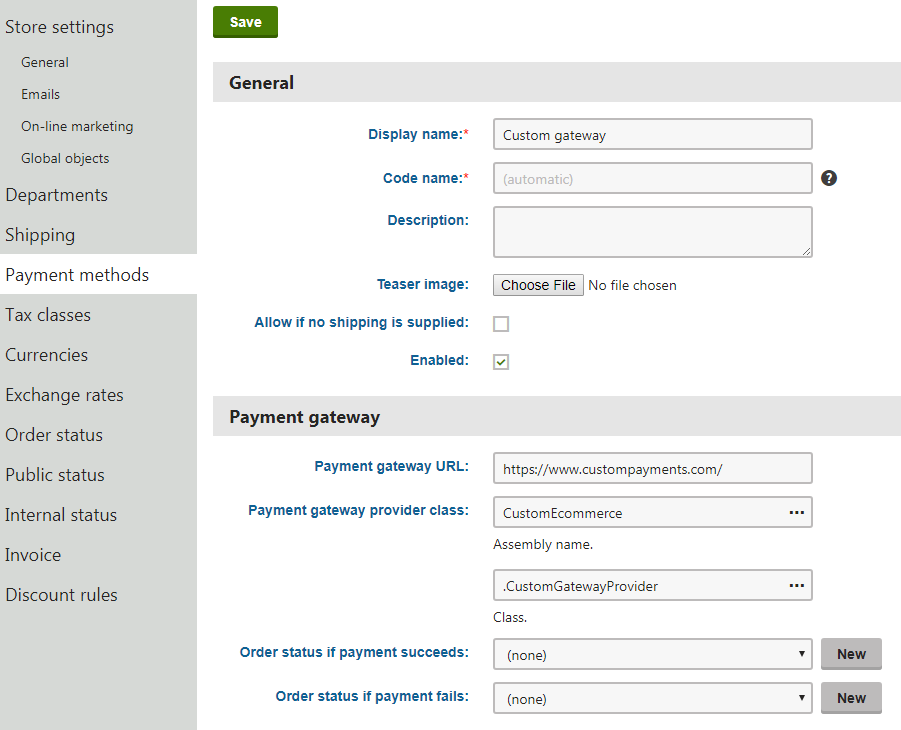
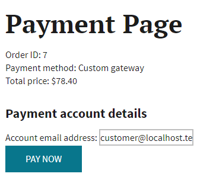

Creating a custom payment gateway
The Kentico E-commerce Solution allows you to integrate with 3rd-party payment gateways or services. To develop a custom payment gateway:
Create a payment gateway form that allows customers to enter any required payment data.
Create a custom payment gateway provider class that performs the required payment processing.
Map the payment gateway provider to the appropriate payment form by registering a custom implementation of the IPaymentGatewayFormFactory interface.
(Optional) Create an IPN handler for your payment gateway.
Open the Store configuration application in Kentico.
Switch to the Payment methods tab.
Create a new payment method using the custom payment gateway provider class.

Creating a custom payment gateway
Customers on your website can now select the custom payment method during checkout and pay for their orders using the given gateway.
Creating payment gateway forms
Open your Kentico solution in Visual Studio.
Create a new web user control (ascx file) in the Kentico web project (CMS or CMSApp).
Add the required form inputs and other content into the control's markup.
Set the control class to inherit from the abstract CMSPaymentGatewayForm class (located in the CMS.Ecommerce.Web.UI namespace).
Override the following methods of the base class:
GetPaymentGatewayData() – loads the customer's input from the payment form. Returns the payment data as an IDictionary<string, object> collection.
ValidateData() – validates the payment form's input. We recommend calling the base method in your override, which validates the form's data using the ValidateCustomData method of the related payment provider class.
(Optional) OnInitialized() – called after the related payment provider class is assigned and initialized. Allows you to access the data of the related order via the payment provider.
Notes
The payment data (personal information, etc.) is not saved into the database, only passed to the related payment provider class.
Use the PaymentProvider property to access the instance of the payment provider class related to the form (within the OnInitialized or ValidateData methods).
Creating payment gateway providers
Create a new custom class inheriting from the CMSPaymentGatewayProvider abstract class (located in the CMS.Ecommerce namespace).
Class location
We recommend creating a new assembly (Class library project) in your Kentico solution and including your custom classes there. Add the appropriate references to both the assembly and the main Kentico web project. For more information, see Best practices for customization.
Make the class implement one or both of the following interfaces and add the required members:
IDirectPaymentGatewayProvider – for transactions that immediately mark funds for transfer/settlement during the customer's initial payment.
ProcessPayment(IDictionary<string, object>) – method that processes any input data from the payment form and sends the payment request to the gateway. Set and return the payment result using the provider's PaymentResult property.
IDelayedPaymentGatewayProvider – for transactions that initially only authorize the payment and capture of funds is done at a later time.
IsPaymentAuthorized – bool property indicating whether the processed payment represents a transaction that was successfully authorized for later capture. We recommend using the payment result data to store and evaluate the authorization status (i.e. the PaymentIsAuthorized flag of the provider's PaymentResult property).
publicboolIsPaymentAuthorized{get{returnPaymentResult !=null&& PaymentResult.PaymentIsAuthorized;}}AuthorizePayment(IDictionary<string, object>) – method that processes any input data from the payment form and sends the authorization request to the gateway. Set and return the payment result using the provider's PaymentResult property.
CapturePayment() – method that performs capture of funds for orders that already have successfully authorized payments. Triggered automatically when the Capture payment button is clicked when editing orders with the corresponding payment method. You need to set and return the payment result using the provider's PaymentResult property.
Override the following methods of the base class:
ValidateCustomData(IDictionary<string, object>) – validates input data to ensure the correctness of custom payment parameters. Typically, this method is called from the ValidateData method of the related payment gateway form.
UseDelayedPayment() – only necessary if your provider supports delayed capture of funds (i.e. implements the IDelayedPaymentGatewayProvider interface). If your provider allows only delayed capture transactions, return a true value. For providers that support both direct payments and delayed capture, use the method to control which transaction type is used (for example, you can load the returned value from a custom setting).
Notes
You can access the data of the order (and shopping cart) related to the processed payment using the provider's Order property.
If you need to directly assign an order whose payment you wish to process, set the order's identifier into the provider's OrderId property.
Use the PaymentResult property (PaymentResultInfo) to get or set the payment results.
Call the UpdateOrderPaymentResult() method to save the current payment results into the order. The method also automatically performs the following:
Sets the time stamp (payment date) and the payment method values of the results.
Changes the order's status to the value configured in the related payment method for successful, failed or authorized payments .
If the payment transaction fails before the customer leaves the payment form, you can display an appropriate error message by setting the message text into the provider's ErrorMessage property.
Mapping gateway providers to forms
The system maps payment gateway providers to the appropriate payment form by using the registered implementation of the IPaymentGatewayFormFactory interface.
To perform correct form mapping for your custom gateway providers:
Create a new custom class inheriting from PaymentGatewayFormFactory (the default IPaymentGatewayFormFactory implementation, located in the CMS.Ecommerce.Web.UI namespace).
Override the GetPath method and evaluate the type of the method's CMSPaymentGatewayProvider parameter.
For your custom gateway provider types, return the path to the corresponding custom gateway form (control).
Call the base GetPath method for all other gateway provider types.
Register your implementation of the interface using the RegisterImplementation assembly attribute.
Handling IPN for custom payment gateways
If you wish to use Instant Payment Notification (IPN) with your payment gateway, you need to create a custom HTTP handler that performs the required communication between your Kentico application and the payment service. Do not handle IPN requests using standard pages (web forms), otherwise you will encounter security errors due to invalid CSRF tokens.
See also: Payment Gateways and CSRF protection
Example
The following example demonstrates how to implement a custom payment gateway in Kentico. The example allows customers to pay for orders using an external gateway or service (the service URLs in the example are fictional). The samples include two variants of the gateway provider class – one for direct payment transactions and another for authorization transactions with delayed capture of funds.
The example assumes the following payment model:
In the payment step of the checkout process, the system asks the customer for an email address identifying their payment account.
After the customer confirms payment, the system validates the email address and redirects the user to the external gateway's payment page.
The customer finishes the payment on the external page, and the gateway sends a notification about the result of the payment.
A custom HTTP handler accepts the notification and calls a method from the provider class to process and save the results (the external gateway is fictional, so this part of the process is not implemented in the example).
If using the delayed capture variant of the provider class, the store's administrators need to manually capture funds at a later time for orders with successfully authorized payments.
Creating the payment gateway form
Prepare a payment form with one input field where customer enter an email address identifying their account with the fictional payment gateway:
Open your Kentico solution in Visual Studio.
Create a Web User Control named CustomGatewayForm.ascx in your site's folder under the web project root (for example the DancingGoat folder for the Dancing Goat sample site).
Add the following markup to the control:
For web application projects, rename the CodeFile attribute in the Control directive to Codebehind.
<%@ Control Language="C#" AutoEventWireup="true" CodeFile="CustomGatewayForm.ascx.cs" Inherits="DancingGoat_CustomGatewayForm" %><h4>Payment account details</h4><asp:LabelID="lblError"runat="server"EnableViewState="false"CssClass="ErrorLabel"Visible="false"/><asp:LabelID="lblPaymentAccountEmail"EnableViewState="false"runat="server"Text="Account email address:"/><asp:TextBoxID="txtPaymentAccountEmail"runat="server"/>Switch to the control's code behind and add the following code:
usingSystem;usingSystem.Collections.Generic;usingCMS.Ecommerce.Web.UI;usingCMS.Ecommerce;publicpartialclassDancingGoat_CustomGatewayForm : CMSPaymentGatewayForm{/// <summary>/// Called automatically after the related payment provider is assigned to the form and initialized./// </summary>protectedoverridevoidOnInitialized(){// Attempts to get a default email address value from the Kentico customer objectstringcustomerEmail = CustomerInfoProvider.GetCustomerInfo(PaymentProvider.Order.OrderCustomerID)?.CustomerEmail;if(!String.IsNullOrEmpty(customerEmail)){txtPaymentAccountEmail.Text = customerEmail;}}/// <summary>/// Loads the customer's input from the payment form./// </summary>publicoverrideIDictionary<string,object> GetPaymentGatewayData(){varpaymentData =newDictionary<string,object>();paymentData.Add("PaymentAccountEmail", txtPaymentAccountEmail.Text.Trim());returnpaymentData;}/// <summary>/// Used for validation of the payment form's inputs./// </summary>publicoverridestringValidateData(){// The 'ValidateData' method of the base class delegates the validation logic to the related payment provider// First gets the form's data using the 'GetPaymentGatewayData()' method// and then validates it by calling the provider's 'ValidateCustomData' methodstringerror =base.ValidateData();if(!String.IsNullOrEmpty(error)){lblError.Visible =true;lblError.Text = error;}returnerror;}}

Custom payment gateway form
Preparing a project for custom classes
Prepare a separate project for custom classes in your Kentico solution:
Create a new Class Library project in the Kentico solution (or reuse an existing custom project).
Add references to the required Kentico libraries (DLLs) for the new project:
Right-click the project and select Add -> Reference.
Select the Browse tab of the Reference manager dialog, click Browse and navigate to the Lib folder of your Kentico web project.
Add references to the following libraries (and any others that you may need in your custom code):
CMS.Base.dll
CMS.Core.dll
CMS.DataEngine.dll
CMS.Ecommerce.dll
CMS.Ecommerce.Web.UI.dll
CMS.Helpers.dll
Reference the custom project from the Kentico web project (CMSApp or CMS).
Right-click the project in the Solution Explorer and select Manage NuGet Packages.
Install the System.Net.Http.Formatting.Extension package (used in the example for serialization of data posted to the external gateway).
Edit the custom project's AssemblyInfo.cs file (in the Properties folder).
Add the AssemblyDiscoverable assembly attribute:
usingCMS;[assembly:AssemblyDiscoverable]
Creating the payment gateway provider
Add the payment gateway provider class under the custom project:
using System.Collections.Generic;using CMS.Ecommerce;using CMS.Helpers;public class CustomGatewayProvider : CMSPaymentGatewayProvider, IDirectPaymentGatewayProvider{ /// <summary> /// Validates data submitted by the customer through the related payment form. /// </summary> public override string ValidateCustomData(IDictionary<string, object> paymentData) { // Gets the email address value from the submitted payment form string paymentAccountEmail = ValidationHelper.GetString(paymentData["PaymentAccountEmail"], ""); // Checks whether the value is a valid email address if (!ValidationHelper.IsEmail(paymentAccountEmail)) { return "Please enter a valid email address identifying your payment account."; } return string.Empty; } /// <summary> /// Processes the payment after a customer submits valid data through the payment form. /// </summary> public PaymentResultInfo ProcessPayment(IDictionary<string, object> paymentData) { // Prepares the URL of the external gateway's payment page string gatewayUrl = "https://www.custompayments.com/service/directpayment"; // Adds query string parameters to the payment page URL with data for the gateway // Most parameter values are loaded from the related order, the payment account email is from the payment form gatewayUrl = URLHelper.AddParameterToUrl(gatewayUrl, "orderid", OrderId.ToString()); gatewayUrl = URLHelper.AddParameterToUrl(gatewayUrl, "price", Order.OrderGrandTotal.ToString()); gatewayUrl = URLHelper.AddParameterToUrl(gatewayUrl, "currency", CurrencyInfoProvider.GetCurrencyInfo(Order.OrderCurrencyID).CurrencyCode); gatewayUrl = URLHelper.AddParameterToUrl(gatewayUrl, "accountEmail", ValidationHelper.GetString(paymentData["PaymentAccountEmail"], "")); gatewayUrl = URLHelper.UrlEncodeQueryString(gatewayUrl); // Sets the external gateway URL into the payment results // Customers are redirected to this URL to finish the payment after they successfully submit the payment form PaymentResult.PaymentApprovalUrl = gatewayUrl; PaymentResult.PaymentDescription = "Customer payment approval pending"; // Saves the payment result to the related order // Automatically sets the PaymentResult time stamp (date) and payment method properties UpdateOrderPaymentResult(); // Returns the partially set payment results. // The customer finishes the payment on an external page, so the example assumes that a HTTP handler (IPN) // later processes the gateway's reply, and calls the provider's 'ProcessDirectPaymentReply' method. return PaymentResult; } /// <summary> /// Processes the payment results based on a reply from the payment gateway. /// For example, the method can be called from a custom IPN handler that accepts responses/notifications from /// the external gateway's responses/notifications. /// </summary> public void ProcessDirectPaymentReply(bool success, string transactionId) { if (success) { // Sets the payment result for successful transactions PaymentResult.PaymentIsCompleted = true; PaymentResult.PaymentDescription = "Payment complete"; PaymentResult.PaymentTransactionID = transactionId; } else { // Sets the payment result for failed transactions PaymentResult.PaymentIsFailed = true; PaymentResult.PaymentDescription = "Payment failed"; } // Saves the payment result to the related order // Moves the order to the status configured for successful or failed payments UpdateOrderPaymentResult(); }}using System.Collections.Generic;using System.Net.Http;using CMS.Ecommerce;using CMS.Helpers;public class CustomDelayedCaptureGatewayProvider : CMSPaymentGatewayProvider, IDelayedPaymentGatewayProvider{ // Class used for JSON serialization of data posted during capture transactions private class CaptureData { public string TransactionId { get; set; } } /// <summary> /// Validates data submitted by the customer through the related payment form. /// </summary> public override string ValidateCustomData(IDictionary<string, object> paymentData) { // Gets the email address value from the submitted payment form string paymentAccountEmail = ValidationHelper.GetString(paymentData["PaymentAccountEmail"], ""); // Checks whether the value is a valid email address if (!ValidationHelper.IsEmail(paymentAccountEmail)) { return "Please enter a valid email address identifying your payment account."; } return string.Empty; } /// <summary> /// Indicates whether the provider uses delayed capture of funds. /// You can parameterize the result (for example using a custom setting) for provider classes that allow both direct payments /// and delayed capture (i.e. implement both the IDirectPaymentGatewayProvider and IDelayedPaymentGatewayProvider interfaces). /// </summary> public override bool UseDelayedPayment() { return true; } /// <summary> /// Indicates whether the processed payment represents a transaction that was successfully authorized for later capture. /// Required to control the visibility of the 'Capture payment' button in the order editing interface. /// </summary> public bool IsPaymentAuthorized { get { return PaymentResult != null && PaymentResult.PaymentIsAuthorized; } } /// <summary> /// Processes the authorization transaction after a customer submits valid data through the payment form. /// </summary> public PaymentResultInfo AuthorizePayment(IDictionary<string, object> paymentData) { // Prepares the URL of the external gateway's payment/authorization page string gatewayUrl = "https://www.custompayments.com/service/authorize"; // Adds query string parameters to the payment page URL with data for the gateway // Most parameter values are loaded from the related order, the payment account email is from the payment form gatewayUrl = URLHelper.AddParameterToUrl(gatewayUrl, "orderid", OrderId.ToString()); gatewayUrl = URLHelper.AddParameterToUrl(gatewayUrl, "price", Order.OrderGrandTotal.ToString()); gatewayUrl = URLHelper.AddParameterToUrl(gatewayUrl, "currency", CurrencyInfoProvider.GetCurrencyInfo(Order.OrderCurrencyID).CurrencyCode); gatewayUrl = URLHelper.AddParameterToUrl(gatewayUrl, "accountEmail", ValidationHelper.GetString(paymentData["PaymentAccountEmail"], "")); gatewayUrl = URLHelper.UrlEncodeQueryString(gatewayUrl); // Sets the external gateway URL into the payment results // Customers are redirected to this URL to finish the authorization after they successfully submit the payment form PaymentResult.PaymentApprovalUrl = gatewayUrl; PaymentResult.PaymentDescription = "Customer authorization approval pending"; // Saves the payment result to the related order // Automatically sets the PaymentResult time stamp (date) and payment method properties UpdateOrderPaymentResult(); // Returns the partially set payment results. // The customer finishes the payment on an external page, so the example assumes that a HTTP handler (IPN) // later processes the gateway's reply, and calls the provider's 'ProcessAuthorizationReply' method. return PaymentResult; } /// <summary> /// Processes the payment results for authorization transactions based on a reply from the payment gateway. /// For example, such methods can be called from a custom IPN handler that accepts the response/notification from /// the external payment gateway. /// </summary> public void ProcessAuthorizationReply(bool success, string transactionId) { if (success) { // Sets the payment result for successful authorization transactions PaymentResult.PaymentIsAuthorized = true; PaymentResult.PaymentDescription = "Payment authorized"; PaymentResult.PaymentTransactionID = transactionId; } else { // Sets the payment result for failed authorization transactions PaymentResult.PaymentIsFailed = true; PaymentResult.PaymentDescription = "Payment authorization failed"; } // Saves the payment result to the related order // Moves the order to the status configured for authorized or failed payments UpdateOrderPaymentResult(); } /// <summary> /// Performs capture of funds for successfully authorized payments. /// Triggered when the 'Capture payment' button is clicked when editing an order using the corresponding payment method. /// </summary> public PaymentResultInfo CapturePayment() { // Prepares the URL of the external gateway's payment capture service string gatewayUrl = "https://www.custompayments.com/service/capture"; HttpResponseMessage response = null; using (var client = new HttpClient()) { // Prepares an object containing payment capture parameters for the gateway (suitable for JSON serialization) var captureData = new CaptureData { // Gets the transaction ID from the order's payment result data TransactionId = PaymentResult.PaymentTransactionID }; // Sends a POST request to the payment capture service with the payment parameters response = client.PostAsJsonAsync(gatewayUrl, captureData).Result; } // Marks the payment result as finished if the fund capture is successful // The example only checks the status code of the HTTP response // For real payment gateways, you need to process the response content as required by the gateway's API if (response.StatusCode == System.Net.HttpStatusCode.OK) { PaymentResult.PaymentIsCompleted = true; PaymentResult.PaymentDescription = "Payment captured"; } else { PaymentResult.PaymentIsFailed = false; PaymentResult.PaymentDescription = "Payment capture failed"; } // Saves the payment result to the related order UpdateOrderPaymentResult(); return PaymentResult; }}To process payment results from custom HTTP handlers that accept notifications from the external payment gateway (IPN), create an instance of your payment gateway provider class and call the required methods. For example:
using CMS.Ecommerce;using CMS.Helpers;...// Gets data from the payment gateway's notification request// This example uses URL parameters (the implementation depends on the gateway's API)string transactionId = URLHelper.GetUrlParameter(RequestContext.CurrentURL, "transactionid");int orderId = ValidationHelper.GetInteger(URLHelper.GetUrlParameter(RequestContext.CurrentURL, "orderid"), 0);// Gets the Kentico order object related to the paymentOrderInfo order = OrderInfoProvider.GetOrderInfo(orderId);if (order != null){ // Prepares an instance of the payment gateway provider used by the order's payment method CustomGatewayProvider customProvider = CMSPaymentGatewayProvider.GetPaymentGatewayProvider<CustomGatewayProvider>(order.OrderPaymentOptionID); customProvider.OrderId = orderId; // Calls the provider's method for processing payment results customProvider.ProcessDirectPaymentReply(true, transactionId);} Mapping the gateway provider to the form
Create and register a custom implementation of the IPaymentGatewayFormFactory interface to map your gateway provider to the correct payment form. Add the class under your custom project:
using CMS;using CMS.Ecommerce;using CMS.Ecommerce.Web.UI;// Registers the custom implementation of IPaymentGatewayFormFactory[assembly: RegisterImplementation(typeof(IPaymentGatewayFormFactory), typeof(CustomPaymentGatewayFormFactory))]public class CustomPaymentGatewayFormFactory : PaymentGatewayFormFactory{ protected override string GetPath(CMSPaymentGatewayProvider provider) { // Maps the path to the correct payment gateway form for the custom gateway providers if ((provider is CustomGatewayProvider) || (provider is CustomDelayedCaptureGatewayProvider)) { return "~/DancingGoat/CustomGatewayForm.ascx"; } else { // Calls the base method to map the paths of the default payment gateways return base.GetPath(provider); } }}Save all changes and Build the custom project.
You can now create a new payment method using the custom payment gateway provider class.